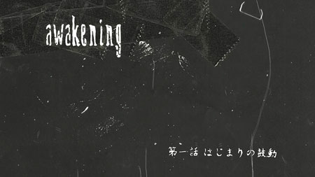
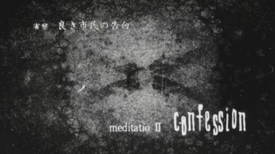
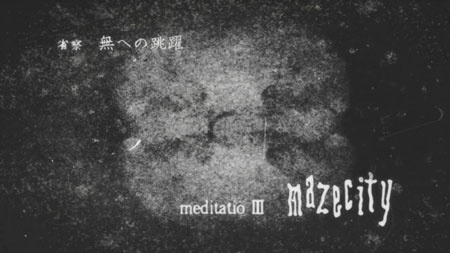
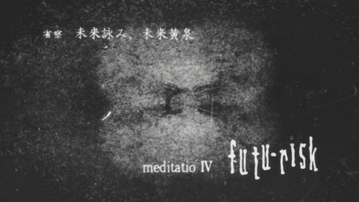

meditatio I - awakening

Awakening is a comprehensive concept that can be interpreted as "the journey from sleep/lies to reality/truth," which is linked to Plato's ideas and the development of epistemology and epistemology...››immerse‹‹
In modern popular culture, the theme of "awakening" was explored in The Matrix by the Wachowski brothers (the protagonist discovers that the world around him is actually a virtual reality created by machines to exploit humans).
Awakening for "princess" Reel occurs like in a fairy tale—almost with a kiss. Her "search for truth" begins with an inscription on a mirror...
In the history of American Christianity, the "Great Awakening" is distinguished as part of the Christian movement known as "revivalism"...
meditatio II - confession

Confession is primarily about Vincent's interrogation, during which he proves he "did nothing."
Meanwhile, model citizen Reel Meyer loses faith in Romdeau when confronted with an attempt to cover up the "monster" incident.
What seemed like a boring and calm truth is actually a lie, but Reel is forced to abandon her search for the real truth.
But the series also features another "good citizen" – Raoul Creed, the Director General of the Security Bureau. He's impeccable, a rule-abiding individual, and, moreover, has dedicated his life to upholding the law... and discovers that following the rules can save no one.
In his encounter with the Proxy, he loses everything he holds most dear, including a part of himself – his peace of mind, his respect for the law, his awareness of his own strength. The first encounter with the Proxy caused a breakdown in Raoul's integrity, which ultimately led the "worthy citizen" to commit "unworthy" acts.
The fourth participant in the “confession” is Pino, frozen in a prayerful pose with her eyes turned to an unknown god – like a pagan who has received a revelation, and in addition, a soul.
meditatio III - mazecity

The Labyrinth City ›››
››› The city of Romdo, from which Vincent and Pino are trying to escape; the Autoleif, having found soul and integrity, knows the right path; for Vincent, beginning his search for himself, this path is so far nothing more than an endless tossing and turning of spirit and body; the Labyrinth City is a labyrinth only for those who cannot see the goal;
››› "Labyrinth City" is a set expression used to describe the modern metropolis and modern urban life in general; the metropolis is a trap for those who cannot escape its power; it draws its strength from them;
››› Historically, "labyrinth city" was the name given to the layout of city blocks that would prevent attackers from quickly penetrating the city center, where the ruler's residence was usually located; Many ancient and medieval cities were built in a labyrinth-like structure;
››› Babylon is sometimes called a "labyrinth city";
››› The Palace of Knossos on the island of Crete is also called a labyrinth city – this palace was built by Daedalus on the orders of King Minos.
meditatio IV - futu-risk

futu-risk ›››
››› Can be interpreted as a "dangerous vision of the future" or "risky prophecy" or "risky addiction to the future."
››› An attempt to change a reality that has rejected you.
››› Fear of leaving this reality forever.
››› A lie about one's exceptionalism and specialness, as an attempt to justify living off the city's waste.
››› Futurism is a movement in art, literature, and painting.
››› Futurism is also a philosophical movement called "futurology"...